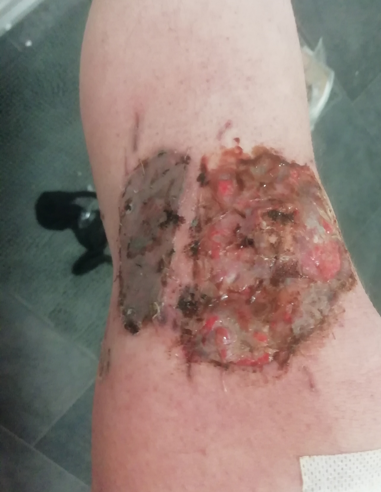
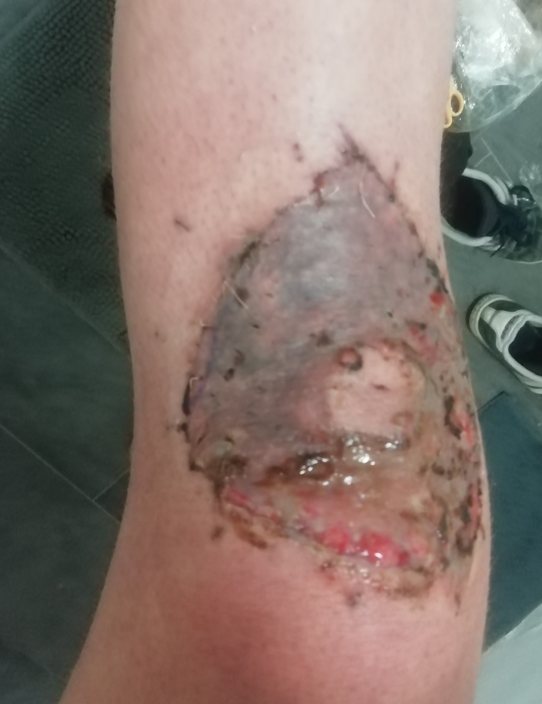

DAY 0

I felt very tired. And hungry. I thought I'd cook myself some pasta, before collapsing in bed. There was literally nothing in the fridge. My eyes turned to the cans of tuna on the shelf. I took one and looked for a can opener. I couldn't find one. My housemate told me she opened hers with a knife. I took a big knife. My housemate left the kitchen. I cut myself with the knife I tried to open the can of tuna with. Duh. But it was a very small cut, no real harm done. The sight of blood made my head spin. I sat down for a little while and stood up again. I gave up on the can of tuna, but not on the pasta. I raised the Kettle to pour the water in the sauce pan. That’s when I fainted. Lots of boiling water fell on the floor and my knees bathed in it for a while (5, 10, 15 seconds? I don' know). I woke up and did not realise I burned my knees. I felt confused. And also embarrassed for some reason. I gave up on the pasta and went to bed. I noticed my trousers were wet. I took them off and this is what I saw. |


I searched online to make up my mind about what had just happened. Third degree, second degree? White skin. Bad sign? No blisters. Good sign? I called 111. I listened to a few minutes of preregistered covid advice. Someone real eventually picked up. He asked a lot of inconsequential questions. No, my left side of my face has not done anything weird. No, I am breathing ok. No, I am not having a heart attack, I just burned my knees and I don’t know what I should do about it. He told me someone would call me back. While waiting for someone to call me back this is what I saw. |


40 minutes later, I called 111 again. I Listened to a few minutes of covid preregistered covid advice. Someone real picked up. I burned my knees and someone was supposed to call me back. It’s been a while, so just checking in. Someone will call you soon. Are you calling to report any changes? No I am calling to ask if someone is going to call me back. But do you report any changes? Yes some blisters are forming. Ok so you are calling to report some changes. Yes, ok whatever. In the meanwhile the blisters got bigger. I5 minutes later someone called me. She saw my knees through video call and told me to go to A&E. Ok great. She told me she booked an appointment at 11:45 pm so I should aim to get there by then. Ok great. |


We got to the A&E. We are for an appointment. We don;t take appontments. What? But I was told by 111 I had one. We don;t take them. So why did they tell ma that? They keep saying that, but it's just not true. Why don;t you take appintments? No A&E does. So 111 tells people they have an appintment when they don;t/ Yep. I spent the whole night in A&E. Mainly waiting. By the time I say a skin specialist it was 8.30 am. The blisters got huge. I did not take a picture of the biggest it got. But at something like 4pm my knees looked like this. |
DAY 5


no blisteres. Live skin. |
DAY 7

At the hospital. This is what I saw. The nurse tells me it's clearly a third degree burn (she does not say this actually). But in any case I skin grafting ASAP. Great. <\p> |
DAY 11

Very artistic if you ask me. But facking painful and tedious to change the bandages this time. The cream got stuck on my skin and the bandages. So you pull the bandaged you wrip the skin. Fun times. This is the last time I saw my old knees. <\p> |
DAY 21


hell yeah. |
DAY 25
|


This was the scariest one for me. My left knee looked alright. My right knee freaked me out a little. I just couldn;t tell what the hell was going over there. Live meat mixed in the pale skin. too much live meat. It did not look good. It did not smell good either. |
DAY 28


Despite my pessimism of the last few days, after freaking out about my right knee, I received some positive news. My knees were healed, which essentially means the new skin has stuck to whatever it is supposed to stick to. The disgusting red live meat bits are due to some overgrowth business which is normal. So all good. Can I bend my knees? Yes. Can I drive? Yes. I was ecstatic. |
DAY 0-7 (some reflections)
|
hvhhdabfv fndjapn fjdafnapfn fajsfnap pjfndpabvjad apfjanfp |
DAY 8-14 (some reflections)
|
hvhhdabfv fndjapn fjdafnapfn fajsfnap pjfndpabvjad apfjanfp |
DAY 15-21 (some reflections)
|
hvhhdabfv fndjapn fjdafnapfn fajsfnap pjfndpabvjad apfjanfp |
DAY 22-28 (some reflections)
|
hvhhdabfv fndjapn fjdafnapfn fajsfnap pjfndpabvjad apfjanfp |
DAY 29-35 (some reflections)
|
hvhhdabfv fndjapn fjdafnapfn fajsfnap pjfndpabvjad apfjanfp |
DAY 36-42 (some reflections)
|
hvhhdabfv fndjapn fjdafnapfn fajsfnap pjfndpabvjad apfjanfp |